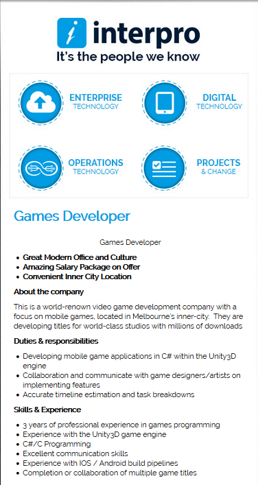

Assignment 1
About Me
 Name: Raymond Louey
Name: Raymond Louey
Student Number: s3853718
Email address: s3853718@student.rmit.edu.au
I was born and raised in Australia, with my family coming from a Chinese background. I have extended family who live in China and Hong Kong, that I occasionally visit.
My most recent form of study was getting a Bachelor’s in Science, with a focus in genetics. I didn’t spend a significant amount of time in this field but did perform some work on
maize product which primarily focused on improving yield in unfavourable conditions. While I enjoyed my brief time in this industry, for personal reasons I decided a career change would
be for the best and am looking into the IT sector.
During my spare time I like to spend time in the backyard, where over the last few years I have been working on cultivating a garden. I like mostly to keep producing plants: lemons,
apricots, mandarin oranges, kaffir, melons and tomatoes are all things I’ve managed to grow.
Personal Profile: Online Tests
Personality Test : Myers Briggs
INTP
Introvert (69%) Intuitive(3%) Thinking(6%) Perceiving 3%)
You have distinct preference of Introversion over Extraversion (69%)
You have marginal or no preference of Intuition over Sensing (3%)
You have slight preference of Thinking over Feeling (6%)
You have marginal or no preference of Perceiving over Judging (3%)
The results indicate that I take a slow and reserved approach to tasks. INTP’s methodically work through every possibility and consider each solution before settling on how to proceed. However, they tend to keep to themselves, not offering any ideas or solutions before others do. I need to keep this in mind during any group work and push myself to take more initiative and be forthcoming with my ideas. I should also try to focus on refining two or three ideas as opposed to getting entangled in the complexities of problems. When forming a team, it’s important to try and balance introverts with members who are capable of coaxing ideas out of everyone in the team. Other members of the team can also help INTPs focus on one idea and lay out specific instructions on how they want the project to proceed.
Online learning style
The Busy Bee
You may have lots of responsibilities on your plate and tend to be an independent learner. While it might be hard fitting study into your schedule, we'll provide study tips and support services to help.
Top tips for the Busy Bee
As the Busy Bee we know you'll be successful at online study if you are a selfish learner. You read that right! Set some boundaries and just say NO if you're not available and you need to study.
Most importantly, don't forget to ask for help when you need it. Save the Student Success Team’s contact details now so you can reach out when you need to.
Your support journey
We'll be by your side throughout the term/study period by calling you each week and sending emails to help you along the way!
These results indicate that time management will be a key factor in my upcoming studies. The courses that I am undertaking have a non-trivial time commitment and I will need to consistently
make time available to get the required tasks done. This may be a problem for teamwork, especially if that work requires frequent in-person collaboration.
I’ve been attempting to have set, consistent time periods throughout the week dedicated to study, but that may not line up with the schedules of others.
With groups being 5+ people it may be very difficult finding a time for us to meet. I expect the team may lean towards delegating portions of the assignment and allowing each
team member to work independently on them. Meetings will still be necessary to ensure everything is progressing as desired, but this style may allow for fewer gatherings and ease into our schedules better.
Other online test: Risk Attitudes Profiler
Moralist/ Rational – Low – Moderate Risk Propensity
People of the Moralist type are thoughtful, prudent, and cautious persons. Their thinking is both analytical and creative. They tend to analyse every situation, both favourable and unfavourable,
although they pay greater attention and attach more importance to the unfavourable events.
Just as the name implies, people of this type are resoundingly rational. They are good at goal setting and distinguishing between what they really need and what they can easily do without.
They are capable of learning from past experiences. They value the present and are serious about the future, planning and preparing for it. The Rational take all their projects seriously too,
thoroughly evaluating their importance and feasibility before making any decision to proceed.
This test indicates I am good at setting goals and checkpoints to work towards during a project. The results also indicate I’m capable of devising numerous methods to reach those goals and assess which one would the most appropriate. However, the test shows I tend to conservative when it comes to potential risks involving the project, focusing too much on any potential downsides and rejecting methodologies which I consider too risky. In a team environment, I can see this leading me to be a roadblock of sorts, being overly keen to reject other member’s ideas because I perceive them to be too risky. Debating ideas can be healthy for a project but I need to be aware that the project still needs to move forward and be okay with accepting group accepted methodologies I might not be comfortable with. When creating a group, I could benefit from being paired with someone more decisive/instinctual to drive the project forward. It could also be beneficial if other team members were more risk positive. These members would help the team navigate more risky methods for what is hopefully a better outcome.
Test sourceshttp://www.humanmetrics.com/
RMIT online student support module
Interest in IT
Interest
Growing up I was exposed to several IT systems and programs. Computers and phones have and will continue to be an integral part of my life and over time my interest in how they work has grown. But as I’ve grown to rely on these systems, I’ve become aware that I know very little about how they work and are built. There have been many instances where things go wrong, or programs lack features I want and I am left frustrated, lacking the knowledge and skills to change them. Recently I found myself looking for a career change and felt this I would take this opportunity to learn more about IT systems.
Why RMIT
Time is a big constraint in my life. The combination of work, home and hobbies made scheduling in study tricky, especially if that included a commute to a physical university campus. Fortunately, many universities offered online courses, which were significantly more compatible with my life schedule. My interest in IT narrowed my search to a handful of universities. After doing some research and some recommendations from friends I settled on RMIT as the place I would study.
Expectations of this course
During my time in this course I’m hoping to develop the familiarity and literacy necessary to navigate any future It projects. During these early parts of my studies, I am looking forward to learning the basics of coding and using these fundamentals to plan and develop future projects.
Ideal Job
Position details:
In undertaking this course, I am intending to hopefully transition into a career in the It industry. My primary interest is in programming and hope to end up in a career in this area. I’ve experimented with automating elements of my home and modifying apps on my phone, but for the longest time I’ve enjoyed playing and modifying games. While the functional aspects of the former bring their own benefits, I personally find greater joy in the creative output game design gives me. The job listing I’ve selected is looking for a senior game developer, working on a mobile game project. The focus of the job will be designing and programming the sum and substance of the actual application. The job will be done as a team of programmers and its expected that you can plan, divide and delegate all elements of the project. Aside from programming, it will be necessary to communicate with designers, artists and other members of the team to refine the application into a saleable product.
Skills required:
- The job requires experience the programming language C/C# and the game engine Unity3D, the tools which they expect the application to be built from.
- As this is a mobile application, previous experience working with IOS and android is expected to overcome any difficulties that arise from the differences in computer vs mobile programming.
- Ability to communicate and work with others. In addition to working with other programmers, you will have to work with people from other professions. Communication with designers and artists is common in this industry and some level of literacy when it comes to their work would be beneficial.
- Experience in the field. Certain skills and knowledge can only be gained from first-hand experience. The accumulation of these skills can lead to faster troubleshooting and innovative ideas and approaches to problems.
I currently have no formal training in any of the requested programming languages/applications. What experience I have is entirely self-taught, learned through experimentation and online sources. In addition to continue learning in my spare time, taking formal courses will hopefully cement my understanding of programming fundamentals and accelerate my learning. My understanding is that certain programming principles are universal, meaning learning a second language is significantly easier than the first allowing me to cover the programming requirements in the job listing. Similarly, the university offer courses focusing on mobile development and taking them is an option in getting some experience in this area. Experience and communication skills, I hope to continuously build over time. In the short-term, taking this course exposes me to working in a team, practising my communication learning from the experiences of others. In the medium term once I’ve built a solid foundation of skills, I’ll looking at internships/industry placements to get some real work experience. In addition, I aim to have at least one IT related side-project which I can work on in my spare-time developing my skills and putting my skills to use.
Project Idea
Overview
Hospitals are optimised for patient care over patient comfort. The dimly lit bleak linoleum hallways, the scent of disinfectant lingers throughout the building. But worst of all is the sounds. The beeps, buzzing, the alarms create a distracting, stressful environment for both the patients and the staff. I propose that we can develop a system to allow hospitals to customise the sounds coming from there systems. The primary aim is to reduce the stress of patients, visitors and hospital staff. There is also potential to utilise sounds as more than a notification system.
Motivation
While alarms are a critical tool in patient monitoring, excessive use can be overwhelming, and staff can struggle to properly interpret every sound[1]. Alarm fatigue has been recognised by many hospitals as an issue affecting medical equipment usage [2][3]. Staff can become desensitised to alarms when they are bombarded with “low-level warnings” which can lead to slow responses or even a failure to respond when a genuine issue arises. I’ve spent extended time in hospitals with loved ones and alarms contributed heavily to making the experience stressful. Frequently alarms would go off and staff would enter, turn it off and assure us it was nothing. If it was nothing, why did that machine just screech like that? This effect was exacerbated during the quiet of the night, a piercing alarm waking you up and hitting you with instant panic. Alarms need to change, either to convey more information about the severity of the issue or reduce the number of times they go off.
Project description
I envision this product to look like just another medical device in every patient’s room. Other medical devices that produce sounds will need to be connected into this device. The project would have a screen and input
device, allowing staff to see what devices are connected and make any modifications they desire.
The project would take any audio outputs from other devices and have the potential to silence or modify these outputs as hospital staff desire. The project will need to interact with each medical device and detect when and why
a sound might be made. Staff could remove alarms altogether if they feel the conditions aren’t severe enough to warrant an alarm. Alternatively, they could modify existing sounds (volume/pitch etc) or replace them entirely
with different sounds of their choosing.
Sounds produced should be highly customisable, different sounds can be produced depending on and assigned to criteria such as: the medical devices function, the severity of the alarm, frequency of alarm or time of day.
Instead of just being an alarm, sounds could be used to convey some practical information if they can be customised to this degree. If the issue is only minor, a sound with lower frequency, a less stressful sound could
be played and the more stressful, louder sounds are reserved for when they are appropriate. These details can be changed from patient to patient, allowing for staff to highlight certain areas of concern. For example, a
patient may be sick with a condition that causes heart issues, so staff may choose put emphasis on any sounds which indicate an issue with heart rate as changes here are very important for this patient.
This concept could be expanded beyond simple alarms, for example using a scale of sounds we could communicate to doctors the volume of an IV bag or the time left on a blood transfusion. While it can be difficult making
this information precise, doctors could learn to associate the ‘correct’ sounds with stable patient health.
Ideally the system could be updated upon request of hospital staff to change sounds based on whatever conditions they would like. The project would have several sounds pre-programmed into it and would also be capable of
taking custom sounds uploaded by the staff members.
The project would also have features to ensure settings can are consistent between patients or whatever area the staff desires. The project could be integrated into existing hospital computer systems so that they
can monitored as a group. Pre-sets and templates would allow staff to easily transfer settings between rooms or apply to them to a general area. Staff could take or share pre-sets across hospitals and have consistency
among their patients if they wish.
Tools, Technology and Skills Required
The project will require a database of sounds, and a means of storing and retrieving them when required. A user interface also needs to be designed to allow users to interact with and assign stored sounds
to functions of medica devices.
Therefore, it will need to interact with other medical devices and determine when and why any alarms/sounds are made. This may require communicating with medical device manufacturers to get the information required.
On the hardware side, again we would need to consulate with manufacturers to devise a way to access them. Hospitals and their staff should be consulted how to best integrate the project into their systems.
The project also needs to integrate a speaker system to allow itself to make the sounds.
It would be beneficial to consulate with sound engineers to develop an initial library of sound suitable for use in a hospital setting. They could also advise on developing similar sounds which could
be used to communicate patient health.
Outcome
This project has two primary goals:
- Reduce anxiety/stress of both patients and staff. The harsh beep that is standard for most medical devices can induce panic and changing this can lead to a better stay and care for patients.
- Lower incidence of ‘alarm fatigue’. The dual problem of overuse of the same sound and alarms going off for relatively minor problems can lead to hospital staff becoming desensitised to alarms, resulting in slower response times. The project aims to solve both, by varying alarm sounds and allowing staff to customise what triggers an alarm for each patient.
[1] Knox, R., 2014. Silencing Many Hospital Alarms Leads To Better Health Care. [online] Npr.org. Available at:
[2] Whalen, D., Covelle, P., Piepenbrink, J., Villanova, K., Cuneo, C. and Awtry, E., 2014. Novel Approach to Cardiac Alarm Management on Telemetry Units. The Journal of Cardiovascular Nursing, 29(5), pp.E13-E22.
[3] Wong, M., Mabuyi, A. and Gonzalez, B., 2013. First National Survey Of Patient-Controlled Analgesia Practices. PPAHS. Available at: